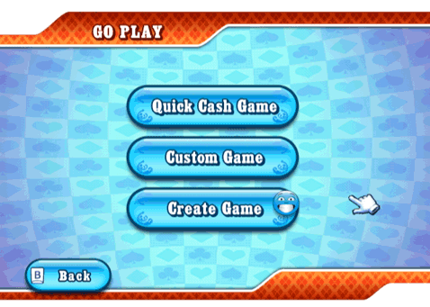
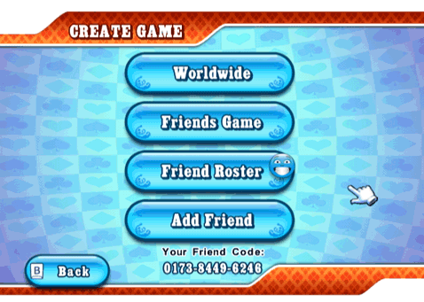

20 |
Go Play |
 |
 Choose to play a Quick Cash Game, get matched with people from all around the world through Custom Game or create a game with Create Game. Quick Cash Game You will be automatically matched and seated on a Cash Game table with small/big blind amounts that you can afford based on your stack. Whenever you join a Cash Game in progress, the highest amount you can afford will be automatically selected as your buy-in. Custom Game Go to the Game Details menu. From there you can specify your preferred table search criteria and be automatically matched with opponents from all around the world. Cash Game only: Depending on the available Cash Games, you might enter a game that is already in progress, or enter a lobby before the game starts. Create Game  From this menu you can create a Worldwide game, create a private Friends Game, access your Friend Roster or Add/remove Friends. Create a Worldwide Game In a Worldwide game, you can be matched with anyone in the world. All players can invite Friends. Only the host has the right to reserve seats and start the game. Create a Friends Game If you do not wish to play with strangers, that is fine. In this menu, you can select to host a private game that can be joined by your Friends only. |
 |
 |
 |